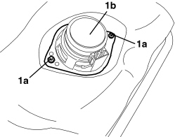

5570T93 REAR SIDE LOUDSPEAKER. (ONE), LEFT OR RIGHT - R.R. WITH REAR DOOR PANEL OR WING. REMOVED
- Path
- Procedures > 55 ELECTRICAL EQUIPMENT > 5570 ACCESSORIES > 5570T CAR RADIO/CAR TELEPHONE/VIDEO > 5570T93 REAR SIDE LOUDSPEAKER. (ONE), LEFT OR RIGHT - R.R. WITH REAR DOOR PANEL OR WING. REMOVED
- Kind
- repair procedure (removal / refitting; the operation number is the code)
- Applies to
- engines: 2.2 JTS, 3.2 JTS; all production periods; only with equipment: Spider
- Interactive page
- https://sloeber94.github.io/elrnDB-aBrrSpdr/en/#/946004056
Applies to: engines: 2.2 JTS, 3.2 JTS; all production periods; only with equipment: Spider
 Removing
Removing
 Refitting
Refitting1. Working the bench on the panel, undo the nuts (1a) and remove the speaker (1b).

Applies to: engines: 2.2 JTS, 3.2 JTS; all production periods; only with equipment: Spider
Refitting
Removing- Check that the speaker is not damaged.
- Position the speaker and tighten the nuts.